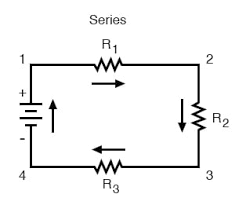
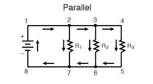

Wiring Methods
A circuit is a pathway through which electric current flows from the negative side of the power source to the positive side. There are primarily three types of electrical circuits used for connecting devices or controls to a power source:
Series Circuit
- In a series circuit, devices or components are connected end-to-end in a single, continuous path. The current flows through each device sequentially before returning to the power source.
- Characteristics:
- The same current flows through all components because there is only one path for the current to travel.
- If one device fails (e.g., a light bulb burns out), the entire circuit is broken, and all devices in the circuit stop operating.
- Series circuits are typically used for applications where each device needs to operate sequentially or where current regulation through all devices is necessary.

Parallel Circuit
- In a parallel circuit, devices or components are connected across each other, providing multiple paths for the current to flow simultaneously.
- Characteristics:
- Each device in a parallel circuit is connected independently across the power source, so the voltage across each device is the same as the source voltage.
- If one device fails or is removed, the other devices continue to operate because each device has its own separate path to the power source.
- Parallel circuits are commonly used in household wiring, where multiple appliances or lights are operated independently of each other.

Combination Circuit
- A combination circuit is a mix of series and parallel wiring methods. It incorporates both series and parallel connections to achieve specific electrical distribution and operational requirements.
- Characteristics:
- Combination circuits allow for flexibility in design, accommodating different operational needs for various devices or components.
- They can provide redundancy and reliability by using parallel connections for critical components while maintaining series connections where sequential operation is required.
- Designers use combination circuits to optimize efficiency, reliability, and safety in electrical installations.